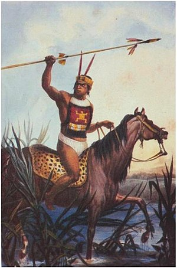
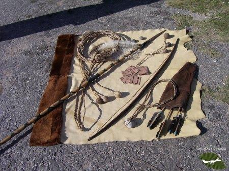

Economía
De está etnia esta comprobado su existencia ya desde el siglo XVI. Ello ha incidido, naturalmente, en sus pautas culturales. Podemos distinguir dos periodos cuya principal diferencia se centra en la introducción del caballo y el uso que hicieron de el. En el primer período se dedicaban a la caza de venados y avestruces, corriéndolos a pies. Utilizaban boleadoras de dos a tres ramales para voltearlo y luego lo remataban con lanzas cortas o con bolas sujetas al puño. Practicaban la recolección especialmente de huevos de avestruz y cogollos de ceibo. Eran de gran importancia por su valor nutritivo. Miel y frutos silvestres completaban su dieta. Construían canoas de hasta 22 metros de largo, que utilizaban para la pesca. Fue practicada durante los primeros tiempos, luego menos importante debido a la existencia de ganado cimarrón.

Armamento
Su armamento estaba constituido, por arcos y flechas de punta de piedra, jabalinas o lanzas corta de puntas de piedra o madera endurecida al fuego; y la honda.
